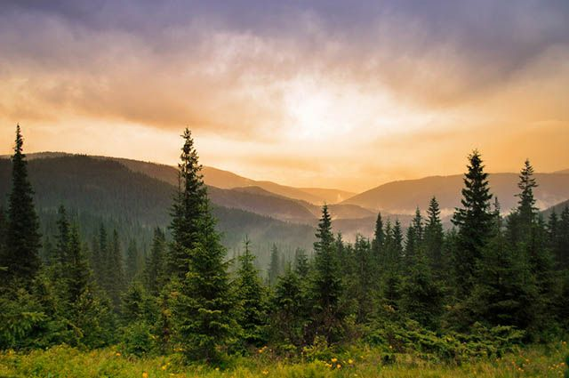
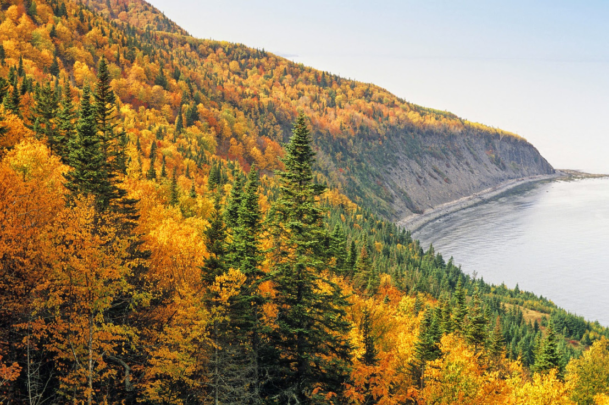
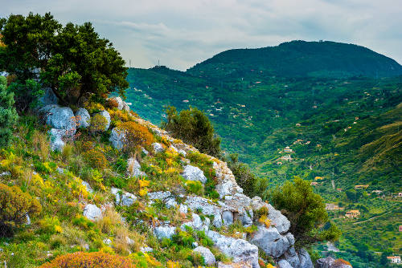
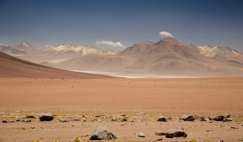

O clima é o conjunto de variações na atmosfera em um determinado local ou região. Trata-se de uma dinâmica que dura um período superior a 30 anos, diferentemente do tempo, que são as oscilações momentâneas nessa mesma atmosfera.
Por exemplo, quando dizemos que uma região possui duas estações bem definidas ao longo do ano, estamos falando do clima, mas ao falarmos que hoje choveu e amanhã vai fazer sol, estamos nos referindo ao tempo.
Nesse sentido, o clima pode ser compreendido a partir de seus fatores e elementos, termos que, aparentemente semelhantes, referem-se a questões totalmente diferentes.
Os elementos climáticos são as grandezas atmosféricas que podem ser medidas ou instantaneamente mensuradas. São os elementos atmosféricos que variam no tempo e no espaço e que se configuram como o atributo básico para se definir o clima da região. Os principais elementos climáticos são: radiação, temperatura, pressão e umidade.
Os fatores climáticos são as condições que determinam ou interferem nos elementos climáticos e os climas deles resultantes. São eles que ajudam a explicar o porquê de uma região ser quente e úmida e outra ser fria e seca, por exemplo. Os principais fatores climáticos são: latitude, altitude, maritimidade e continentalidade, massas de ar, vegetação, correntes marítimas e até o relevo.
Radiação
A radiação climática, em linhas gerais, pode ser definida como todo o calor recebido pela atmosfera, a maior parte advinda do sol, mas que também recebe a influência dos seres vivos e dos elementos naturais e artificiais que refletem o calor já existente. A radiação solar manifesta-se em diferentes tons de intensidade ao longo do planeta, o que contribui para a formação das chamadas zonas térmicas ou climáticas da Terra.
Temperatura
É a mensuração do calor na atmosfera, podendo ser medida em graus celsius (ºC) ou em outras unidades de medida, como fahrenheit (ºF) e o kelvin (K).
Pressão atmosférica: é o “peso” ou “força” exercidos pelo ar sobre a superfície, pois, ao contrário do que muitas pessoas pensam, o ar possui massa e, consequentemente, peso. A pressão atmosférica costuma ser medida em milibares (mb).
Umidade: é a quantidade de água em sua forma gasosa presente na atmosfera. Temos, assim, a umidade absoluta (quantidade total de água na atmosfera) e a umidade relativa do ar (quantidade de água na atmosfera em relação ao total necessário para haver chuva).
Latitude: está intrinsecamente ligada às diferenças da radiação solar sobre a Terra. Assim, quanto mais próximo à Linha do Equador (baixas latitudes), mais as temperaturas tendem a aumentar. Por outro lado, à medida que nos direcionamos rumo às zonas polares (altas latitudes), menores tendem a ser as temperaturas.
Altitude: em regiões mais altas, a pressão atmosfera costuma ser menor, além do fato de a irradiação também ser mais diminuta. Assim a temperatura costuma ser inferior, o que nos faz concluir que quanto maior a altitude, menores as temperaturas e, quanto mais próximo ao nível do mar, maiores as temperaturas.
Maritimidade ou continentalidade: são termos que designam, respectivamente, a proximidade de um local do mar ou a sua posição em uma região mais continental, o que interfere diretamente sobre o clima. Isso ocorre porque o solo costuma se aquecer ou se resfriar mais rapidamente do que a água, o que acarreta uma maior amplitude térmica (diferença entre a maior e menor temperatura) ao longo do ano em regiões continentais e o inverso em regiões litorâneas.
Massas de ar: em função das diferenças de pressão atmosférica, temos a movimentação do ar. Quando esse movimento ocorre em blocos de ar com a mesma temperatura e umidade, formam-se as massas de ar, que transferem suas características para o clima dos locais por onde passam. Massas de ar frio e úmido, por exemplo, são responsáveis por diminuírem as temperaturas e aumentarem a umidade. O encontro entre duas massas diferentes forma as frentes de ar.
Vegetação: interfere no clima de várias formas diferentes. As principais delas são a contenção ou absorção dos raios solares, minimizando os seus efeitos, e a elevação da umidade por meio da evapotranspiração, o que ajuda a diminuir as temperaturas e elevar os índices de chuva.
Relevo: também influencia o clima quando as regiões mais altas impedem a passagem de massas de ar, fazendo com que algumas regiões se tornem mais secas ou até desérticas.
Correntes marítimas: apresentam condições específicas de temperatura, influenciando diretamente o clima. Em regiões em que o mar é mais quente, por exemplo, a evaporação aumenta e eleva a umidade, que se dispersa para outras regiões.
Quando as correntes são mais frias, a umidade local diminui e a pressão atmosférica e a umidade passam a ser menores, o que faz com que essa região acabe “sugando” as massas de ar de outras localidades, que passam a sofrer alterações em seus climas.
Além de todos esses fatores, que são os de ordem natural, também é preciso lembrar que o homem acaba se tornando um dos agentes mais intensos de transformação do clima. Ele pode ser responsável tanto por fenômenos climáticos mais localizados (ilhas de calor, inversão térmica e outros) quanto por processos mais amplos e diversificados.
Clima Equatorial
É registrado nas zonas próximas ao Equador, como partes da África e do Brasil. É quente e úmido. Tem pouca variação térmica durante o ano, em média de 25ºC. No clima Equatorial, há chuva abundante durante todo o ano.

Clima Tropical
Ocorre nas zonas próximas aos trópicos de Câncer e Capricórnio. A temperatura média anual é de 20ºC. A principal característica é a clara definição de duas estações no ano, que são o inverno – seco – e o verão – chuvoso.
Dependendo da região, pode variar em clima tropical seco ou clima tropical chuvoso. É dividido em clima tropical equatorial; tropical de monções; tropical úmido ou de savana e clima tropical de altitude.
Este clima e suas variações, são encontrados no Brasil, Cingapura, regiões da Índia, Sri Lanka, Havaí, Honolulu, México, e Austrália.
Clima Subtropical
O clima subtropical marca as regiões abaixo do trópico de Capricórnio. É mercado pela diferenciação térmica durante o ano porque tem quatro estações bem definidas.
Os principais extremos de temperatura ocorrem no verão, com variação de 20ºC a 25º, e no inverno, quando os termômetros podem marcar entre 0ºC e 10ºC.
As chuvas nas regiões atingidas por este clima variam de 1 mil a 1,5 mil milímetros anuais. São Paulo, o sul de Mato Grosso do Sul, Paraná, Santa Catarina e o Rio Grande do Sul sofrem a influência do clima Subtropical.

Clima Temperado
As quatro estações bem definidas também são características nas regiões de clima temperado. É registrado nas regiões localizadas no meio dos trópicos e dos círculos polares dos hemisférios sul e hemisfério norte.
É dividido em quatro tipos: temperado mediterrâneo, temperado continental e temperado oceânico. Este é o clima de regiões como a Europa, América do Norte e Ásia.

Clima Mediterrâneo
É caracterizado por invernos curtos e de temperaturas baixas, variando entre 0ºC e 15ºC. Já o verão é longo, registrando temperaturas que oscilam entre 18ºC e 25º.
O período chuvoso é o de inverno e o seco ocorre no verão. Embora o inverno seja breve e o verão longo, as quatro estações ano são bem definidas. É encontrado nas regiões localizadas junto ao mar Mediterrâneo.

Clima Desértico
No clima desértico, o calor com médias de 30ºC de temperatura como a principal característica. As chuvas são escassas, quase insignificantes, podendo haver anos em que não chegam a ocorrer.
Em consequência, a umidade do ar é baixa, chegando a 15%. As altas temperaturas ocorrem durante o dia, mas podem ser negativas durante o inverno.
As estações do ano são diferenciadas pela variação de temperatura. Este tipo de clima é encontrado no deserto do Saara, na África; Oriente Médio; Oeste norte-americano, na região de Sonora, no norte Mexicano; no Atacama, que fica no litoral do Chile e Peru; na Austrália e Índia.

Clima Semiárido
Chuvas irregulares e escassas, altas temperaturas e baixa umidade relativa do ar são as principais características do clima semiárido.
A temperatura média anual chega a 27ºC e as chuvas variam em, no máximo, 750 milímetros ao ano. Além de escassas, as chuvas são irregulares e mal distribuídas. É registrado na região Nordeste brasileira.

Clima Continental Árido
Este tipo de clima é marcado pela baixa umidade relativa do ar, em consequência da densidade pluviométrica média de 250 milímetros ao ano.
Além de seco, tem como característica a grande variação de temperatura entre o verão (17º) e o inverno (20º negativos). É observado em regiões como a Ásia Central, Montanhas Rochosas norte-americanas e na Patagônia.

Frio de Montanha
Também chamado de Clima de Altitude, este tipo de clima tem baixas temperaturas durante todo o ano. Em média, os termômetros registram 0º durante o ano, mas inverno, é esperada queda de temperatura para índices negativos. As chuvas nas regiões chega a 1,5 mil milímetros anuais.

Clima Polar
É o clima de temperaturas negativas mais extremas, com termômetros sempre abaixo de 0ºC, com média de 30ºC negativos e que podem cair a 50ºC negativos no inverno.
Além da amplitude térmica, a umidade do ar é elevada, mesmo com baixa incidência de chuvas. Tem como característica também a presença de neve cobrindo o solo durante todo o ano, com cerca de 100 milímetros registrados durante o ano.
Ocorre em regiões como a costas eurasianas do Ártico, sendo o clima da Groenlândia, norte do Canadá, Alasca e na Antártida.